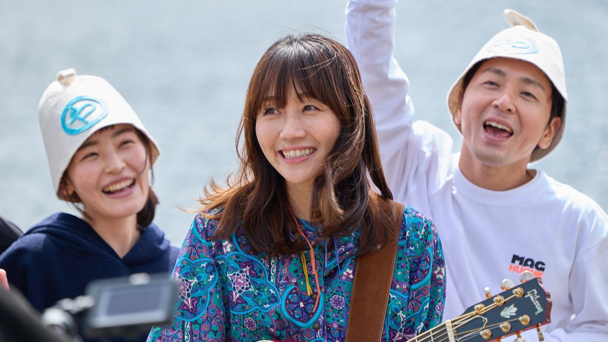
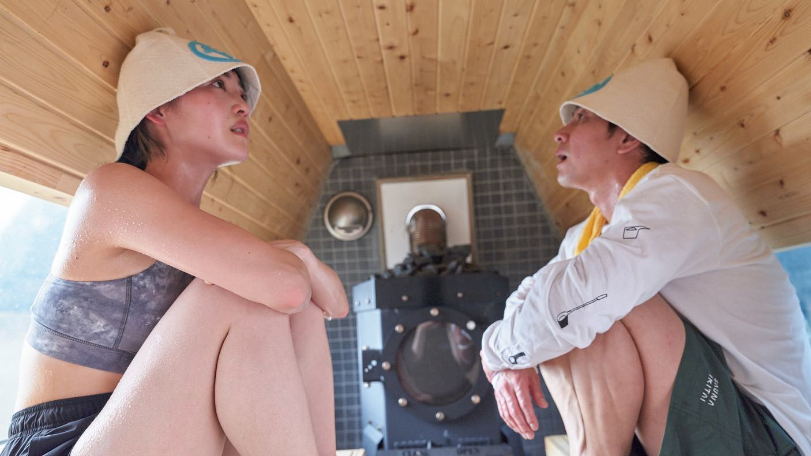
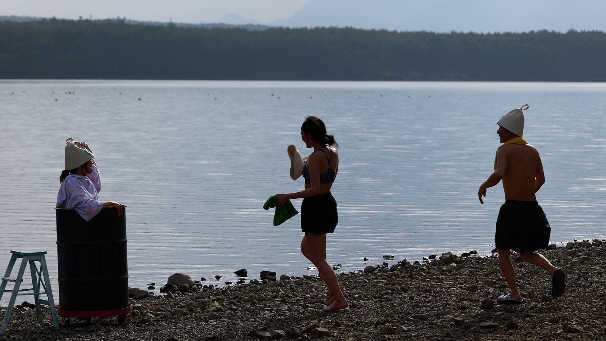
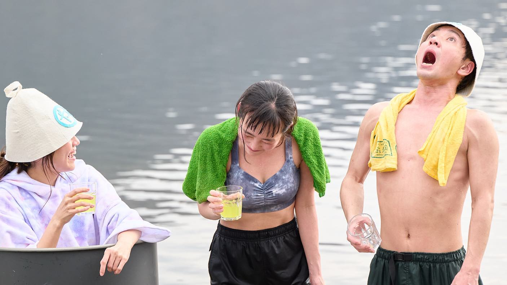
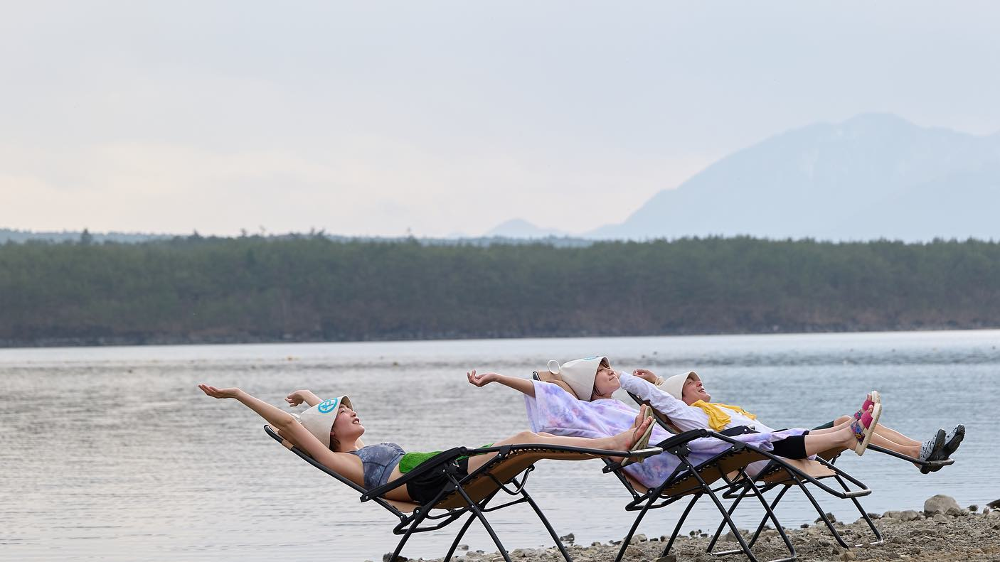
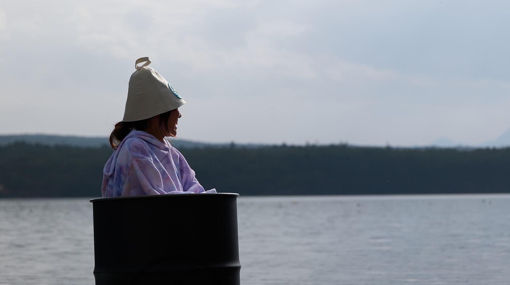
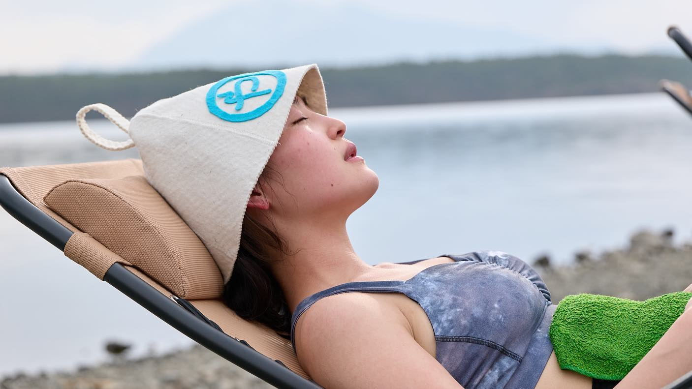
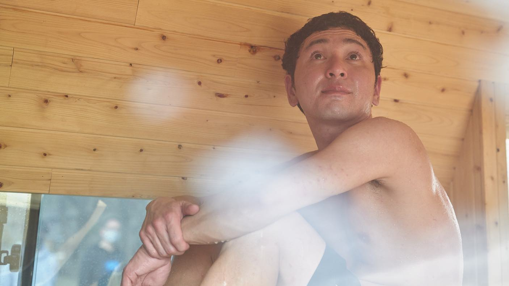

MOVIE / PHOTO
矢井田瞳さんの新曲 「Everybody needs a smile｣








.
【my work】
矢井田瞳さんの新曲
「Everybody needs a smile｣
のミュージックビデオ制作に、サウナ撮影担当兼オフショットカメラマンとして撮影参加させていただきました
https://youtu.be/Ss-xV72ofs4
ミュージックビデオ×アウトドアサウナという異色の空間でしたが、終始笑顔と熱気溢れる素敵な現場でした
リンクからぜひご覧下さい
いちサウナ好きとして、マグ万平さんと清水みさとさんのお2人とご一緒できたのは本当に嬉しかったな…